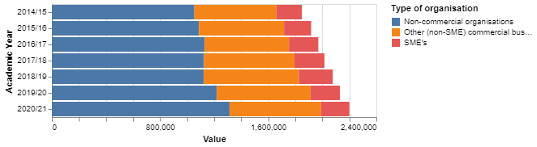
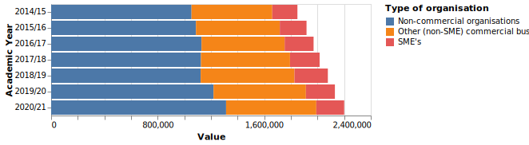

Charts and plotting
Python
Python has a great many charting and plotting options. However, while embedded SVG files are useful for static reports their presentation in a web based report can appear rather dated. Hence the necessity to look at Javascript to chart summary data.
Altair
Plot.ly
Plotly appears to be well regarded within the Python community as a simple but powerful tool to provide quick and aesthetically pleasing charts.1
Practical Business Python provided a usual review and exmaples of its use
HoloViews
mpld3
Including charts in markdown documents
Including html in Markdown document
[Charting using Javascript]
A great many options are available and the exact choice will depend on the type of charts required and the best method of embedding them within a html report. [[Comparison of JavaScript charting libraries]] ([[Special:Permalink/1091753384|this version]])
Example of png file import

Example of svg file import
